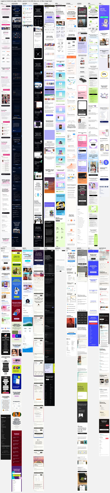

UB sales page: options for the middle
The headline and everything from “Who it’s for” down stay as they are. Every screen in A to D is a real capture from the 3.1 prototype. The options come from 19 sales pages we captured on a phone and published research.
What the research says
13 of 19pages show the real product in the first two blocks after the headline (6 of 7 direct rivals)
4 of 19let you use the product with no sign up, including Virlo, our closest rival
74%of viewing time is spent in the first two screens (NN/g)
1.2 minaverage time on an interactive demo on mobile, vs 2.7 on desktop (Navattic), so keep it to 3 taps
2 of 19put product screens in a carousel; carousels get about 1% interaction, mostly slide 1
16 of 19show reviews, all from named real people. Made-up reviews are banned by the FTC’s 2024 rule


Before launch
The usage numbers must come from UB’s own data, and the founder note is a draft for Ivan. Reviews only go on once we have 3 to 5 real creator quotes with permission.
The 19 sales pages we captured
